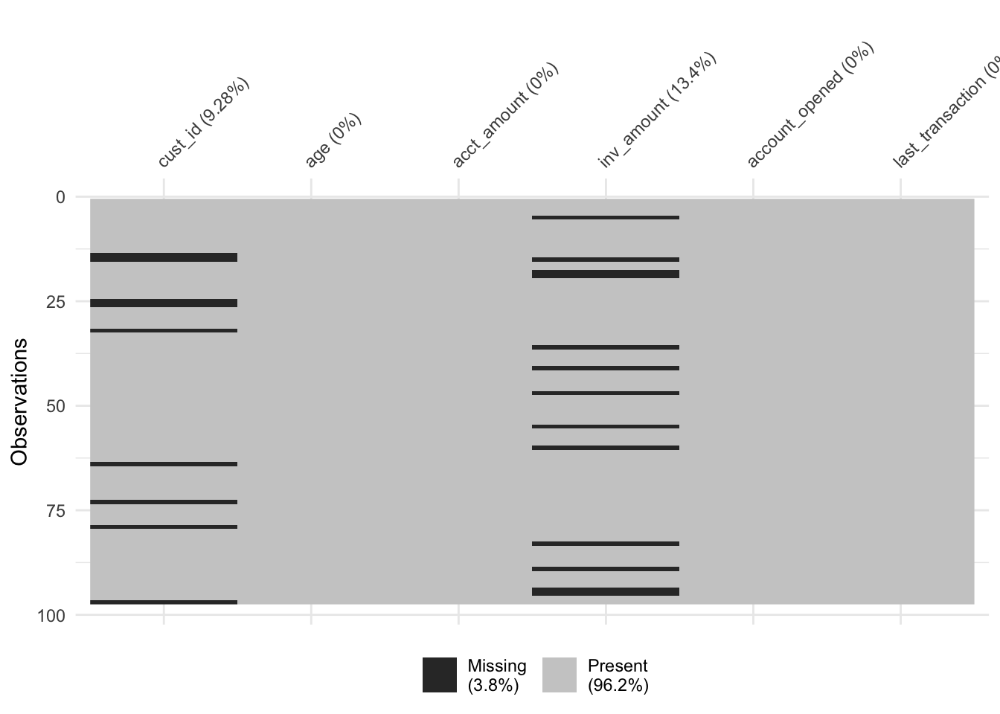

9 Cleaning Data in R
https://learn.datacamp.com/courses/cleaning-data-in-r
9.1 Common Data Problems
Converting data types
Before beginning to analyze any dataset, it’s important to take a look at the different types of columns from the. do that by using glimpse():
# Glimpse at bike_share_rides
glimpse(bike_share_rides)## Rows: 35,229
## Columns: 10
## $ ride_id <int> 52797, 54540, 87695, 45619, 70832, 96135, 29928, 83331…
## $ date <chr> "2017-04-15", "2017-04-19", "2017-04-14", "2017-04-03"…
## $ duration <chr> "1316.15 minutes", "8.13 minutes", "24.85 minutes", "6…
## $ station_A_id <dbl> 67, 21, 16, 58, 16, 6, 5, 16, 5, 81, 30, 16, 16, 67, 2…
## $ station_A_name <chr> "San Francisco Caltrain Station 2 (Townsend St at 4th…
## $ station_B_id <dbl> 89, 64, 355, 368, 81, 66, 350, 91, 62, 81, 109, 10, 80…
## $ station_B_name <chr> "Division St at Potrero Ave", "5th St at Brannan St", …
## $ bike_id <dbl> 1974, 860, 2263, 1417, 507, 75, 388, 239, 1449, 3289, …
## $ user_gender <chr> "Male", "Male", "Male", "Male", "Male", "Male", "Male"…
## $ user_birth_year <dbl> 1972, 1986, 1993, 1981, 1981, 1988, 1993, 1996, 1993, …# Summary of user_birth_year
summary(bike_share_rides$user_birth_year)## Min. 1st Qu. Median Mean 3rd Qu. Max.
## 1900 1979 1986 1984 1991 2001The summary statistics of user_birth_year don’t seem to offer much useful information about the different birth years because the user_birth_year column is a numeric type and should be converted to a factor.
Use dplyr and assertive packages to convert a column into a factor and assert/confirm whether a column is the type wanted or not.
Use as.___() functions to convert objects to a new data type.
Use assert_is____() functions to confirm an object’s data type.
# Convert user_birth_year to factor: user_birth_year_fct
bike_share_rides <- bike_share_rides %>%
mutate(user_birth_year_fct = as.factor(user_birth_year))If the assert is TRUE, nothing will be outputted:
# Assert user_birth_year_fct is a factor
assert_is_factor(bike_share_rides$user_birth_year_fct)# Summary of user_birth_year_fct
summary(bike_share_rides$user_birth_year_fct)## 1900 1902 1923 1931 1938 1939 1941 1942 1943 1945 1946 1947 1948 1949 1950 1951
## 1 7 2 23 2 1 3 10 4 16 5 24 9 30 37 25
## 1952 1953 1954 1955 1956 1957 1958 1959 1960 1961 1962 1963 1964 1965 1966 1967
## 70 49 65 66 112 62 156 99 196 161 256 237 245 349 225 363
## 1968 1969 1970 1971 1972 1973 1974 1975 1976 1977 1978 1979 1980 1981 1982 1983
## 365 331 370 548 529 527 563 601 481 541 775 876 825 1016 1056 1262
## 1984 1985 1986 1987 1988 1989 1990 1991 1992 1993 1994 1995 1996 1997 1998 1999
## 1157 1318 1606 1672 2135 1872 2062 1582 1703 1498 1476 1185 813 358 365 348
## 2000 2001
## 473 30Trimming strings
Another common dirty data problem is having extra bits like percent signs or periods in numbers, causing them to be read in as character.
Use str_remove() to remove "minutes" from the duration column of bike_share_rides. Add this as a new column called duration_trimmed.
Convert the duration_trimmed column to a numeric type and add this as a new column called duration_mins.
Glimpse at bike_share_rides and assert that the duration_mins column is numeric.
bike_share_rides <- bike_share_rides %>%
# Remove 'minutes' from duration: duration_trimmed
mutate(duration_trimmed = str_remove(duration, "minutes"),
# Convert duration_trimmed to numeric: duration_mins
duration_mins = as.numeric(duration_trimmed))# Glimpse at bike_share_rides
glimpse(bike_share_rides)## Rows: 35,229
## Columns: 13
## $ ride_id <int> 52797, 54540, 87695, 45619, 70832, 96135, 29928, 8…
## $ date <chr> "2017-04-15", "2017-04-19", "2017-04-14", "2017-04…
## $ duration <chr> "1316.15 minutes", "8.13 minutes", "24.85 minutes"…
## $ station_A_id <dbl> 67, 21, 16, 58, 16, 6, 5, 16, 5, 81, 30, 16, 16, 6…
## $ station_A_name <chr> "San Francisco Caltrain Station 2 (Townsend St at…
## $ station_B_id <dbl> 89, 64, 355, 368, 81, 66, 350, 91, 62, 81, 109, 10…
## $ station_B_name <chr> "Division St at Potrero Ave", "5th St at Brannan S…
## $ bike_id <dbl> 1974, 860, 2263, 1417, 507, 75, 388, 239, 1449, 32…
## $ user_gender <chr> "Male", "Male", "Male", "Male", "Male", "Male", "M…
## $ user_birth_year <dbl> 1972, 1986, 1993, 1981, 1981, 1988, 1993, 1996, 19…
## $ user_birth_year_fct <fct> 1972, 1986, 1993, 1981, 1981, 1988, 1993, 1996, 19…
## $ duration_trimmed <chr> "1316.15 ", "8.13 ", "24.85 ", "6.35 ", "9.8 ", "1…
## $ duration_mins <dbl> 1316.15, 8.13, 24.85, 6.35, 9.80, 17.47, 16.52, 14…# Assert duration_mins is numeric
assert_is_numeric(bike_share_rides$duration_mins)For more details, go to the String Wrangling section at the bottom of Transform your data chapter of Working with Data in the Tidyverse.
Range constraints
Values that are out of range can throw off an analysis, so it’s important to catch them early on.
examine the duration_min column: Bikes are not allowed to be kept out more than 24 hours/1440 minutes at a time, but issues with some of the bikes caused inaccurate recording of the time they were returned.
Create a three-bin histogram of the duration_min column of bike_share_rides using ggplot2 to identify if there is out-of-range data.
Replace the values of duration_min that are greater than 1440 minutes (24 hours) with 1440. Add this to bike_share_rides as a new column called duration_min_const.
Assert that all values of duration_min_const are between 0 and 1440:
# Create breaks
breaks <- c(min(bike_share_rides$duration_mins), 0, 1440, max(bike_share_rides$duration_mins))
# Create a histogram of duration_min
ggplot(bike_share_rides, aes(duration_mins)) +
geom_histogram(breaks = breaks)
# duration_min_const: replace vals of duration_min > 1440 with 1440
bike_share_rides <- bike_share_rides %>%
mutate(duration_min_const = replace(duration_mins, duration_mins > 1440, 1440))
# Make sure all values of duration_min_const are between 0 and 1440
assert_all_are_in_closed_range(bike_share_rides$duration_min_const, lower = 0, upper = 1440)Something has gone wrong and there are data with dates from the future, which is way outside of the date range to be working with. To fix this, remove any rides from the dataset that have a date in the future.
Convert the date column of bike_share_rides from character to the Date data type.
Assert that all values in the date column happened sometime in the past and not in the future.
# Convert date to Date type
bike_share_rides <- bike_share_rides %>%
mutate(date = as.Date(date))
# Make sure all dates are in the past
assert_all_are_in_past(bike_share_rides$date)## Warning: Coercing bike_share_rides$date to class 'POSIXct'.Filter bike_share_rides to get only the rides from the past or today, and save this as bike_share_rides_past.
Assert that the dates in bike_share_rides_past occurred only in the past.
# Filter for rides that occurred before or on today's date
bike_share_rides_past <- bike_share_rides %>%
filter(date <= today())
# Make sure all dates from bike_share_rides_past are in the past
assert_all_are_in_past(bike_share_rides_past$date)## Warning: Coercing bike_share_rides_past$date to class 'POSIXct'.Uniqueness constraints
When multiple rows of a data frame share the same values for all columns, they’re full duplicates of each other. Removing duplicates like this is important, since having the same value repeated multiple times can alter summary statistics like the mean and median.
Get the total number of full duplicates in bike_share_rides.
Remove all full duplicates from bike_share_rides and save the new data frame as bike_share_rides_unique.
Get the total number of full duplicates in the new bike_share_rides_unique data frame.
# Count the number of full duplicates
sum(duplicated(bike_share_rides))## [1] 0# Remove duplicates
bike_share_rides_unique <- distinct(bike_share_rides)
# Count the full duplicates in bike_share_rides_unique
sum(duplicated(bike_share_rides_unique))## [1] 0Identify any partial duplicates and then practice the most common technique to deal with them, which involves dropping all partial duplicates, keeping only the first.
Remove full and partial duplicates from bike_share_rides based on ride_id only, keeping all columns. Store this as bike_share_rides_unique.
# Remove full and partial duplicates
bike_share_rides_unique <- bike_share_rides %>%
# Only based on ride_id instead of all cols
distinct(ride_id, .keep_all = TRUE)
# Find duplicated ride_ids in bike_share_rides_unique
bike_share_rides_unique %>%
# Count the number of occurrences of each ride_id
count(ride_id) %>%
# Filter for rows with a count > 1
filter(n > 1)## # A tibble: 0 × 2
## # … with 2 variables: ride_id <int>, n <int>Aggregating partial duplicates
Another way of handling partial duplicates is to compute a summary statistic of the values that differ between partial duplicates, such as mean, median, maximum, or minimum. This can come in handy when you’re not sure how your data was collected and want an average, or if based on domain knowledge, you’d rather have too high of an estimate than too low of an estimate (or vice versa).
bike_share_rides %>%
# Group by ride_id and date
group_by(ride_id, date) %>%
# Add duration_min_avg column
mutate(duration_min_avg = mean(duration_mins)) %>%
# Remove duplicates based on ride_id and date, keep all cols
distinct(ride_id, date, .keep_all = TRUE) %>%
# Remove duration_min column
select(-duration_mins)## # A tibble: 35,229 × 14
## # Groups: ride_id, date [35,229]
## ride_id date duration station_A_id station_A_name station_B_id
## <int> <date> <chr> <dbl> <chr> <dbl>
## 1 52797 2017-04-15 1316.15 minutes 67 San Francisco C… 89
## 2 54540 2017-04-19 8.13 minutes 21 Montgomery St B… 64
## 3 87695 2017-04-14 24.85 minutes 16 Steuart St at M… 355
## 4 45619 2017-04-03 6.35 minutes 58 Market St at 10… 368
## 5 70832 2017-04-10 9.8 minutes 16 Steuart St at M… 81
## 6 96135 2017-04-18 17.47 minutes 6 The Embarcadero… 66
## 7 29928 2017-04-22 16.52 minutes 5 Powell St BART … 350
## 8 83331 2017-04-11 14.72 minutes 16 Steuart St at M… 91
## 9 72424 2017-04-05 4.12 minutes 5 Powell St BART … 62
## 10 25910 2017-04-20 25.77 minutes 81 Berry St at 4th… 81
## # … with 35,219 more rows, and 8 more variables: station_B_name <chr>,
## # bike_id <dbl>, user_gender <chr>, user_birth_year <dbl>,
## # user_birth_year_fct <fct>, duration_trimmed <chr>,
## # duration_min_const <dbl>, duration_min_avg <dbl>9.2 Categorical and Text Data
Membership data range
A categorical data column would sometime have a limited range of observations that can be classified into membership list. Observations that doesn’t belong to this membership are outliers, and wouldn’t make sense.
Count the number of occurrences of each dest_size in sfo_survey.
"huge", " Small ", "Large ", and " Hub" appear to violate membership constraints.
# Count the number of occurrences of dest_size
sfo_survey %>%
count(dest_size)## dest_size n
## 1 Small 1
## 2 Hub 1
## 3 Hub 1756
## 4 Large 143
## 5 Large 1
## 6 Medium 682
## 7 Small 225Use the correct filtering join on sfo_survey and dest_sizes to get the rows of sfo_survey that have a valid dest_size:
dest_sizes <- structure(list(dest_size = c("Small", "Medium", "Large", "Hub"
), passengers_per_day = structure(c(1L, 3L, 4L, 2L), .Label = c("0-20K",
"100K+", "20K-70K", "70K-100K"), class = "factor")), .Names = c("dest_size",
"passengers_per_day"), row.names = c(NA, -4L), class = "data.frame")# Remove bad dest_size rows
sfo_survey %>%
# Join with dest_sizes
semi_join(dest_sizes, by = "dest_size")%>%
# Count the number of each dest_size
count(dest_size)## dest_size n
## 1 Hub 1756
## 2 Large 143
## 3 Medium 682
## 4 Small 225Identifying inconsistency
Sometimes, there are different kinds of inconsistencies that can occur within categories, making it look like a variable has more categories than it should.
Examine the dest_size column again as well as the cleanliness column and determine what kind of issues, if any, these two categorical variables face.
Count the number of occurrences of each category of the dest_size variable of sfo_survey. The categories in dest_size have inconsistent white space:
# Count dest_size
sfo_survey %>%
count(dest_size)## dest_size n
## 1 Small 1
## 2 Hub 1
## 3 Hub 1756
## 4 Large 143
## 5 Large 1
## 6 Medium 682
## 7 Small 225Count the number of occurrences of each category of the cleanliness variable of sfo_survey. The categories in cleanliness have inconsistent capitalization.
# Count cleanliness
sfo_survey %>%
count(cleanliness)## cleanliness n
## 1 Average 433
## 2 Clean 970
## 3 Dirty 2
## 4 Somewhat clean 1254
## 5 Somewhat dirty 30
## 6 <NA> 120Correcting inconsistency
dest_size has whitespace inconsistencies and cleanliness has capitalization inconsistencies, use the new tools to fix the inconsistent values in sfo_survey instead of removing the data points entirely.
Add a column to sfo_survey called dest_size_trimmed that contains the values in the dest_size column with all leading and trailing whitespace removed.
Add another column called cleanliness_lower that contains the values in the cleanliness column converted to all lowercase.
# Add new columns to sfo_survey
sfo_survey <- sfo_survey %>%
# dest_size_trimmed: dest_size without whitespace
mutate(dest_size_trimmed = str_trim(dest_size),
# cleanliness_lower: cleanliness converted to lowercase
cleanliness_lower = str_to_lower(cleanliness))
# Count values of dest_size_trimmed
sfo_survey %>%
count(dest_size_trimmed)## dest_size_trimmed n
## 1 Hub 1757
## 2 Large 144
## 3 Medium 682
## 4 Small 226# Count values of cleanliness_lower
sfo_survey %>%
count(cleanliness_lower)## cleanliness_lower n
## 1 average 433
## 2 clean 970
## 3 dirty 2
## 4 somewhat clean 1254
## 5 somewhat dirty 30
## 6 <NA> 120Collapsing categories
Sometimes, there are observations that have input error that make it slightly different from the group it should belong to. Collapse(merge, or cover the error over with an umbrella group) to simply, fix the variable:
# Count categories of dest_region
sfo_survey %>%
count(dest_region)## dest_region n
## 1 Asia 260
## 2 Australia/New Zealand 66
## 3 Canada/Mexico 220
## 4 Central/South America 29
## 5 East US 498
## 6 Europe 401
## 7 Middle East 79
## 8 Midwest US 281
## 9 West US 975"EU", "eur", and "Europ" need to be collapsed to "Europe".
Create a vector called europe_categories containing the three values of dest_region that need to be collapsed.
Add a new column to sfo_survey called dest_region_collapsed that contains the values from the dest_region column, except the categories stored in europe_categories should be collapsed to Europe.
# Count categories of dest_region
sfo_survey %>%
count(dest_region)## dest_region n
## 1 Asia 260
## 2 Australia/New Zealand 66
## 3 Canada/Mexico 220
## 4 Central/South America 29
## 5 East US 498
## 6 Europe 401
## 7 Middle East 79
## 8 Midwest US 281
## 9 West US 975# Categories to map to Europe
europe_categories <- c("Europ", "eur", "EU")
# Add a new col dest_region_collapsed
sfo_survey %>%
# Map all categories in europe_categories to Europe
mutate(dest_region_collapsed = fct_collapse(dest_region,
Europe = europe_categories)) %>%
# Count categories of dest_region_collapsed
count(dest_region_collapsed)## Warning: Unknown levels in `f`: Europ, eur, EU## dest_region_collapsed n
## 1 Asia 260
## 2 Australia/New Zealand 66
## 3 Canada/Mexico 220
## 4 Central/South America 29
## 5 East US 498
## 6 Europe 401
## 7 Middle East 79
## 8 Midwest US 281
## 9 West US 975For more details, go to the (How To Collapse/Merge Levels) section of Manipulating Factor Variables chapter of Categorical Data in the Tidyverse.
Detecting inconsistent text data
Sometimes, in a column, there are inconsistent observations in different formats.
Filter for rows with phone numbers that contain "(", or ")". Remember to use fixed() when searching for parentheses.
sfo_survey[1:10,] %>%
filter(str_detect(safety, "safe") | str_detect(safety, "danger"))## id day airline destination dest_region dest_size
## 1 1844 Monday TURKISH AIRLINES ISTANBUL Middle East Hub
## 2 1840 Monday TURKISH AIRLINES ISTANBUL Middle East Hub
## 3 1837 Monday TURKISH AIRLINES ISTANBUL Middle East Hub
## 4 3010 Wednesday AMERICAN MIAMI East US Hub
## 5 1838 Monday TURKISH AIRLINES ISTANBUL Middle East Hub
## 6 1845 Monday TURKISH AIRLINES ISTANBUL Middle East Hub
## 7 2097 Monday UNITED INTL MEXICO CITY Canada/Mexico Hub
## 8 1846 Monday TURKISH AIRLINES ISTANBUL Middle East Hub
## boarding_area dept_time wait_min cleanliness safety
## 1 Gates 91-102 2018-12-31 315 Somewhat clean Somewhat safe
## 2 Gates 91-102 2018-12-31 165 Average Somewhat safe
## 3 Gates 91-102 2018-12-31 225 Somewhat clean Somewhat safe
## 4 Gates 50-59 2018-12-31 88 Somewhat clean Very safe
## 5 Gates 91-102 2018-12-31 195 Somewhat clean Very safe
## 6 Gates 91-102 2018-12-31 135 Average Somewhat safe
## 7 Gates 91-102 2018-12-31 145 Somewhat clean Somewhat safe
## 8 Gates 91-102 2018-12-31 145 Clean Somewhat safe
## satisfaction dest_size_trimmed cleanliness_lower
## 1 Somewhat satsified Hub somewhat clean
## 2 Somewhat satsified Hub average
## 3 Somewhat satsified Hub somewhat clean
## 4 Somewhat satsified Hub somewhat clean
## 5 Somewhat satsified Hub somewhat clean
## 6 Somewhat satsified Hub average
## 7 Somewhat satsified Hub somewhat clean
## 8 Somewhat satsified Hub cleanFor more details, go to the String Wrangling section at the bottom of Transform your data chapter of Working with Data in the Tidyverse.
Replacing and removing
The str_remove_all() function will remove all instances of the string passed to it.
sfo_survey[1:10,] %>%
mutate(safe_or_not = str_remove_all(safety, "Somewhat")) %>%
select(airline, safe_or_not)## airline safe_or_not
## 1 TURKISH AIRLINES Neutral
## 2 TURKISH AIRLINES safe
## 3 TURKISH AIRLINES safe
## 4 TURKISH AIRLINES safe
## 5 TURKISH AIRLINES Neutral
## 6 AMERICAN Very safe
## 7 TURKISH AIRLINES Very safe
## 8 TURKISH AIRLINES safe
## 9 UNITED INTL safe
## 10 TURKISH AIRLINES safeAgain, go to the String Wrangling section at the bottom of Transform your data
Filter/select observations with certain length
The str_length() function takes in a character vector, returns a number for each element that indicates the length of each element.
clean_only <- sfo_survey %>%
filter(str_length(cleanliness_lower) == 5)
clean_only[1:10,] %>%
select(airline, cleanliness_lower)## airline cleanliness_lower
## 1 TURKISH AIRLINES clean
## 2 TURKISH AIRLINES clean
## 3 TURKISH AIRLINES clean
## 4 TURKISH AIRLINES clean
## 5 TURKISH AIRLINES clean
## 6 TURKISH AIRLINES clean
## 7 CATHAY PACIFIC clean
## 8 UNITED clean
## 9 UNITED clean
## 10 FRONTIER clean9.3 Advanced Data Problems
Date uniformity
Make sure that the accounts dataset doesn’t contain any uniformity problems. In this exercise, investigate the date_opened column and clean it up so that all the dates are in the same format.
By default, as.Date() can’t convert "Month DD, YYYY" formats:
as.Date(accounts$date_opened)## [1] "2003-10-19" NA "2008-07-29" "2005-06-09" "2012-03-31"
## [6] "2007-06-20" NA "2019-06-03" "2011-05-07" "2018-04-07"
## [11] "2018-11-16" "2001-04-16" "2005-04-21" "2006-06-13" "2009-01-07"
## [16] "2012-07-07" NA NA "2004-05-21" "2001-09-06"
## [21] "2005-04-09" "2009-10-20" "2003-05-16" "2015-10-25" NA
## [26] NA NA "2008-12-27" "2015-11-11" "2009-02-26"
## [31] "2008-12-26" NA NA "2005-12-13" NA
## [36] "2004-12-03" "2016-10-19" NA "2009-10-05" "2013-07-11"
## [41] "2002-03-24" "2015-10-17" NA NA "2019-11-12"
## [46] NA NA "2019-10-01" "2000-08-17" "2001-04-11"
## [51] NA "2016-06-30" NA NA "2013-05-23"
## [56] "2017-02-24" NA "2004-11-02" "2019-03-06" "2018-09-01"
## [61] NA "2002-12-31" "2013-07-27" "2014-01-10" "2011-12-14"
## [66] NA "2008-03-01" "2018-05-07" "2017-11-23" NA
## [71] "2008-09-27" NA "2008-01-07" NA "2005-05-11"
## [76] "2003-08-12" NA NA NA "2014-11-25"
## [81] NA NA NA "2008-04-01" NA
## [86] "2002-10-01" "2011-03-25" "2000-07-11" "2014-10-19" NA
## [91] "2013-06-20" "2008-01-16" "2016-06-24" NA NA
## [96] "2007-04-29" NA NAFor more details, go to the Date Formats section of Utilities chapter of Intermediate R.
Convert the dates in the date_opened column to the same format using the formats vector and store this as a new column called date_opened_clean:
# Define the date formats
formats <- c("%Y-%m-%d", "%B %d, %Y")
# Convert dates to the same format
accounts[1:10,] %>%
mutate(date_opened_clean = parse_date_time(date_opened, formats))## id date_opened total date_opened_clean
## 1 A880C79F 2003-10-19 169305 2003-10-19
## 2 BE8222DF October 05, 2018 107460 2018-10-05
## 3 19F9E113 2008-07-29 15297152 2008-07-29
## 4 A2FE52A3 2005-06-09 14897272 2005-06-09
## 5 F6DC2C08 2012-03-31 124568 2012-03-31
## 6 D2E55799 2007-06-20 13635752 2007-06-20
## 7 53AE87EF December 01, 2017 15375984 2017-12-01
## 8 3E97F253 2019-06-03 14515800 2019-06-03
## 9 4AE79EA1 2011-05-07 23338536 2011-05-07
## 10 2322DFB4 2018-04-07 189524 2018-04-07Currency uniformity
Now that dates are in order, correct any unit differences. First, plot the data, there’s a group of very high values, and a group of relatively lower values. The bank has two different offices - one in New York, and one in Tokyo, so the accounts managed by the Tokyo office are in Japanese yen instead of U.S.
Create a scatter plot with date_opened on the x-axis and total on the y-axis:
# Scatter plot of opening date and total amount
accounts %>%
ggplot(aes(x = date_opened, y = total)) +
geom_point()
Left join accounts and account_offices by their id columns.
Convert the totals from the Tokyo office from yen to dollars, and keep the total from the New York office in dollars. Store this as a new column called total_usd:
# Left join accounts to account_offices by id
accounts[1:10,] %>%
left_join(account_offices, by = "id") %>%
# Convert totals from the Tokyo office to USD
mutate(total_usd = ifelse(office == "Tokyo", total / 104, total))## id date_opened total office total_usd
## 1 A880C79F 2003-10-19 169305 New York 169305
## 2 BE8222DF October 05, 2018 107460 New York 107460
## 3 19F9E113 2008-07-29 15297152 Tokyo 147088
## 4 A2FE52A3 2005-06-09 14897272 Tokyo 143243
## 5 F6DC2C08 2012-03-31 124568 New York 124568
## 6 D2E55799 2007-06-20 13635752 Tokyo 131113
## 7 53AE87EF December 01, 2017 15375984 Tokyo 147846
## 8 3E97F253 2019-06-03 14515800 Tokyo 139575
## 9 4AE79EA1 2011-05-07 23338536 Tokyo 224409
## 10 2322DFB4 2018-04-07 189524 New York 189524Cross field validation
Cross field validation basically means cross-checking/comparing with other columns to make sure the compared column values make sense.
There are three different funds that account holders can store their money in. In this exercise, validate whether the total amount in each account is equal to the sum of the amount in fund_A, fund_B, and fund_C.
Create a new column called theoretical_total that contains the sum of the amounts in each fund.
Find the accounts where the total doesn’t match the theoretical_total.
# Find invalid totals
accounts_funds %>%
# theoretical_total: sum of the three funds
mutate(theoretical_total = fund_A + fund_B + fund_C) %>%
# Find accounts where total doesn't match theoretical_total
filter(theoretical_total != total)## id date_opened total fund_A fund_B fund_C acct_age theoretical_total
## 1 D5EB0F00 2001-04-16 130920 69487 48681 56408 19 174576
## 2 92C237C6 2005-12-13 85362 72556 21739 19537 15 113832
## 3 0E5B69F5 2018-05-07 134488 88475 44383 46475 2 179333Validating age
Now that some inconsistencies in the total amounts been found, there may also be inconsistencies in the acct_age column, maybe these inconsistencies are related. Validate the age of each account and see if rows with inconsistent acct_ages are the same ones that had inconsistent totals.
Create a new column called theoretical_age that contains the age of each account based on the date_opened.
Find the accounts where the acct_age doesn’t match the theoretical_age.
# Find invalid acct_age
accounts_funds %>%
# theoretical_age: age of acct based on date_opened
mutate(theoretical_age = floor(as.numeric(date_opened %--% today(), "years"))) %>%
# Filter for rows where acct_age is different from theoretical_age
filter(acct_age != theoretical_age)## id date_opened total fund_A fund_B fund_C acct_age theoretical_age
## 1 A880C79F 2003-10-19 169305 85018 75580 8707 17 18
## 2 BE8222DF 2018-10-05 107460 64784 35194 7482 2 3
## 3 19F9E113 2008-07-29 147088 64029 15300 67759 12 13
## 4 A2FE52A3 2005-06-09 143243 63466 54053 25724 15 16
## 5 F6DC2C08 2012-03-31 124568 21156 47935 55477 8 10
## 6 D2E55799 2007-06-20 131113 79241 26800 25072 13 14
## 7 53AE87EF 2017-12-01 147846 38450 29185 80211 3 4
## 8 3E97F253 2019-06-03 139575 11045 65907 62623 1 2
## 9 4AE79EA1 2011-05-07 224409 68394 80418 75597 9 11
## 10 2322DFB4 2018-04-07 189524 66964 52238 70322 2 4
## 11 645335B2 2018-11-16 154001 68691 56400 28910 2 3
## 12 D5EB0F00 2001-04-16 130920 69487 48681 56408 19 21
## 13 1EB593F7 2005-04-21 191989 75388 84199 32402 15 17
## 14 DDBA03D9 2006-06-13 92473 32931 22162 37380 14 15
## 15 40E4A2F4 2009-01-07 180547 82564 68210 29773 12 13
## 16 39132EEA 2012-07-07 150115 26358 74286 49471 8 9
## 17 387F8E4D 2011-01-03 90410 7520 67142 15748 10 11
## 18 11C3C3C0 2017-12-24 180003 84295 31591 64117 2 4
## 19 C2FC91E1 2004-05-21 105722 25398 24075 56249 16 17
## 20 FB8F01C1 2001-09-06 217068 69738 86768 60562 19 20
## 21 0128D2D0 2005-04-09 184421 82221 60149 42051 15 17
## 22 BE6E4B3F 2009-10-20 150769 49607 55417 45745 11 12
## 23 7C6E2ECC 2003-05-16 169814 82093 62756 24965 17 19
## 24 02E63545 2015-10-25 125117 50287 23342 51488 5 6
## 25 4399C98B 2001-05-19 130421 58177 43912 28332 19 21
## 26 98F4CF0F 2014-05-27 143211 84645 7088 51478 6 7
## 27 247222A6 2015-05-26 150372 69104 63369 17899 5 6
## 28 420985EE 2008-12-27 123125 59390 27890 35845 12 13
## 29 0E3903BA 2015-11-11 182668 47236 87437 47995 5 6
## 30 64EF994F 2009-02-26 161141 89269 25939 45933 11 13
## 31 CCF84EDB 2008-12-26 136128 33405 89016 13707 12 13
## 32 51C21705 2016-04-22 155684 53542 38234 63908 4 6
## 33 C868C6AD 2000-01-31 112818 17876 15057 79885 21 22
## 34 92C237C6 2005-12-13 85362 72556 21739 19537 15 16
## 35 9ECEADB2 2018-05-17 146153 40675 46482 58996 2 4
## 36 DF0AFE50 2004-12-03 146635 67373 63443 15819 16 17
## 37 5CD605B3 2016-10-19 87921 8474 50284 29163 4 5
## 38 402839E2 2019-09-14 163416 59213 23460 80743 1 2
## 39 78286CE7 2009-10-05 144704 72495 38450 33759 11 12
## 40 168E071B 2013-07-11 87826 21642 42937 23247 7 8
## 41 466CCDAA 2002-03-24 144051 19756 80182 44113 18 20
## 42 8DE1ECB9 2015-10-17 217975 67105 72907 77963 5 6
## 43 E19FE6B5 2009-06-06 101936 39942 38580 23414 11 12
## 44 1240D39C 2011-09-07 151556 18835 46135 86586 9 10
## 45 A7BFAA72 2019-11-12 133790 56001 54885 22904 1 2
## 46 C3D24436 2002-05-24 101584 58434 21069 22081 18 19
## 47 FAD92F0F 2007-09-13 164241 70211 73984 20046 13 14
## 48 236A1D51 2019-10-01 177759 20886 80883 75990 1 2
## 49 A6DDDC4C 2000-08-17 67962 5970 20088 41904 20 21
## 50 DDFD0B3D 2001-04-11 151696 30596 84390 36710 19 21
## 51 D13375E9 2005-11-01 134083 28545 37537 68001 15 16
## 52 AC50B796 2016-06-30 154916 54451 35906 64559 4 5
## 53 290319FD 2005-05-27 170178 54341 32764 83073 15 16
## 54 FC71925A 2006-11-02 186281 89127 43356 53798 14 15
## 55 7B0F3685 2013-05-23 179102 81321 18106 79675 7 8
## 56 BE411172 2017-02-24 170096 86735 56580 26781 3 5
## 57 58066E39 2015-09-16 163708 59004 16987 87717 5 6
## 58 EA7FF83A 2004-11-02 111526 86856 19406 5264 15 17
## 59 14A2DDB7 2019-03-06 123163 49666 25407 48090 1 3
## 60 305EEAA8 2018-09-01 138632 20307 35028 83297 2 3
## 61 8F25E54C 2008-11-24 189126 72037 62513 54576 12 13
## 62 19DD73C6 2002-12-31 141275 72872 51219 17184 18 19
## 63 ACB8E6AF 2013-07-27 71359 10203 51163 9993 7 8
## 64 91BFCC40 2014-01-10 132859 67405 7399 58055 7 8
## 65 86ACAF81 2011-12-14 235901 79599 79291 77011 9 10
## 66 77E85C14 2009-11-20 133348 20954 33018 79376 11 12
## 67 C5C6B79D 2008-03-01 188424 61972 69266 57186 12 14
## 68 0E5B69F5 2018-05-07 134488 88475 44383 46475 2 4
## 69 5275B518 2017-11-23 71665 16114 35691 19860 3 4
## 70 17217048 2001-05-25 193377 45365 58558 89454 19 20
## 71 E7496A7F 2008-09-27 142669 8615 72841 61213 12 13
## 72 41BBB7B4 2005-02-22 144229 26449 83938 33842 15 17
## 73 F6C7ABA1 2008-01-07 183440 82468 73281 27691 13 14
## 74 E699DF01 2008-02-17 199603 84788 47808 67007 12 14
## 75 BACA7378 2005-05-11 204271 87254 57043 59974 15 17
## 76 84A4302F 2003-08-12 186737 86632 33506 66599 17 18
## 77 F8A78C27 2006-04-05 41164 7560 21040 12564 14 16
## 78 8BADDF6A 2010-12-31 158203 25477 43902 88824 10 11
## 79 9FB57E68 2017-09-01 216352 86665 77117 52570 3 4
## 80 5C98E8F5 2014-11-25 103200 28990 24986 49224 6 7
## 81 6BB53C2A 2016-12-03 146394 29561 29023 87810 4 5
## 82 E23F2505 2017-10-15 121614 59013 39086 23515 3 4
## 83 0C121914 2017-06-21 227729 86625 79950 61154 3 4
## 84 3627E08A 2008-04-01 238104 60475 89011 88618 11 14
## 85 A94493B3 2009-08-01 85975 48482 7054 30439 11 12
## 86 0682E9DE 2002-10-01 72832 15809 15617 41406 18 19
## 87 49931170 2011-03-25 139614 83035 22239 34340 9 11
## 88 A154F63B 2000-07-11 133800 42648 16464 74688 20 21
## 89 3690CCED 2014-10-19 226595 70260 84337 71998 6 7
## 90 48F5E6D8 2020-02-16 135435 29123 23204 83108 0 2
## 91 515FAD84 2013-06-20 98190 6452 60014 31724 7 8
## 92 59794264 2008-01-16 157964 68869 32999 56096 13 14
## 93 2038185B 2016-06-24 194662 20591 89990 84081 4 5
## 94 65EAC615 2004-02-20 140191 20108 46764 73319 16 18
## 95 6C7509C9 2000-09-16 212089 58861 76975 76253 20 21
## 96 BD969A9D 2007-04-29 167238 10234 83183 73821 13 15
## 97 B0CDCE3D 2014-05-28 145240 62549 48606 34085 6 7
## 98 33A7F03E 2007-10-14 191839 80542 87909 23388 13 14Visualizing missing data
Dealing with missing data is one of the most common tasks in data science. There are a variety of types of missingness, as well as a variety of types of solutions to missing data.
A new version of the accounts data frame containing data on the amount held and amount invested for new and existing customers. However, there are rows with missing inv_amount values.
Visualize the missing values in accounts by column using vis_miss() from the visdat package.
# Visualize the missing values by column
vis_miss(accounts_inv)
Most customers below 25 do not have investment accounts yet, and suspect it could be driving the missingness.
accounts_inv %>%
# missing_inv: Is inv_amount missing?
mutate(missing_inv = is.na(inv_amount)) %>%
# Group by missing_inv
group_by(missing_inv) %>%
# Calculate mean age for each missing_inv group
summarize(avg_age = mean(age))## # A tibble: 2 × 2
## missing_inv avg_age
## <lgl> <dbl>
## 1 FALSE 43.6
## 2 TRUE 21.8Since the average age for TRUE missing_inv is 22 and the average age for FALSE missing_inv is 44, it is likely that the inv_amount variable is missing mostly in young customers.
# Sort by age and visualize missing vals
accounts_inv %>%
arrange(age) %>%
vis_miss()
9.4 Record Linkage
Damerau-Levenshtein distance is used to identify how similar two strings are. As a reminder, Damerau-Levenshtein distance is the minimum number of steps needed to get from String A to String B, using these operations:
Insertion of a new character.
Deletion of an existing character.
Substitution of an existing character.
Transposition of two existing consecutive characters.
Use the stringdist package to compute string distances using various methods.
# Calculate Damerau-Levenshtein distance
stringdist("las angelos", "los angeles", method = "dl")## [1] 2LCS (Longest Common Subsequence) only considers Insertion and Deletion.
# Calculate LCS distance
stringdist("las angelos", "los angeles", method = "lcs")## [1] 4# Calculate Jaccard distance
stringdist("las angelos", "los angeles", method = "jaccard")## [1] 0Fixing typos with string distance
zagat, is a set of restaurants in New York, Los Angeles, Atlanta, San Francisco, and Las Vegas. The data is from Zagat, a company that collects restaurant reviews, and includes the restaurant names, addresses, phone numbers, as well as other restaurant information.
The city column contains the name of the city that the restaurant is located in. However, there are a number of typos throughout the column. Map each city to one of the five correctly-spelled cities contained in the cities data frame.
Left join zagat and cities based on string distance using the city and city_actual columns.
stringdist_left_join function from the fuzzyjoin package that allows you to do a stringdist left join.
# Count the number of each city variation
zagat[1:10,] %>%
count(city)## city n
## 1 llos angeles 1
## 2 lo angeles 2
## 3 los anegeles 1
## 4 los angeles 6# Join and look at results
zagat[1:10,] %>%
# Left join based on stringdist using city and city_actual cols
stringdist_left_join(cities, by = c("city" = "city_actual")) %>%
# Select the name, city, and city_actual cols
select(name, city, city_actual)## name city city_actual
## 1 apple pan the llos angeles los angeles
## 2 asahi ramen los angeles los angeles
## 3 baja fresh los angeles los angeles
## 4 belvedere the los angeles los angeles
## 5 benita's frites lo angeles los angeles
## 6 bernard's los angeles los angeles
## 7 bistro 45 lo angeles los angeles
## 8 brighton coffee shop los angeles los angeles
## 9 bristol farms market cafe los anegeles los angeles
## 10 cafe'50s los angeles los angelesRecord linkage
record linkage is the act of linking data from different sources regarding the same entity. But unlike joins, record linkage does not require exact matches between different pairs of data, and instead can find close matches using string similarity. This is why record linkage is effective when there are no common unique keys between the data sources you can rely upon when linking data sources such as a unique identifier.
Pair blocking
Generate all possible pairs, and then use newly-cleaned city column as a blocking variable. A blocking variable is helpful when the dataset is too big and you don’t want to compare/match all the possible pairs with each every one of the observations.
# Generate pairs with same city
pair_blocking(zagat, fodors, blocking_var = "city")## Simple blocking
## Blocking variable(s): city
## First data set: 310 records
## Second data set: 533 records
## Total number of pairs: 27 694 pairs
##
## ldat with 27 694 rows and 2 columns
## x y
## 1 2 1
## 2 2 2
## 3 2 3
## 4 2 4
## 5 2 5
## 6 2 6
## 7 2 7
## 8 2 8
## 9 2 9
## 10 2 10
## : : :
## 27685 307 524
## 27686 307 525
## 27687 307 526
## 27688 307 527
## 27689 307 528
## 27690 307 529
## 27691 307 530
## 27692 307 531
## 27693 307 532
## 27694 307 533Comparing pairs
Compare pairs by name, phone, and addr using jaro_winkler().
compare_pairs() can take in a character vector of column names as the by argument.
# Generate pairs
pair_blocking(zagat, fodors, blocking_var = "city") %>%
# Compare pairs by name, phone, addr
compare_pairs(by = c("name", "phone", "addr"),
default_comparator = jaro_winkler())## Compare
## By: name, phone, addr
##
## Simple blocking
## Blocking variable(s): city
## First data set: 310 records
## Second data set: 533 records
## Total number of pairs: 27 694 pairs
##
## ldat with 27 694 rows and 5 columns
## x y name phone addr
## 1 2 1 0.4959307 0.7152778 0.5948270
## 2 2 2 0.6197391 0.6269841 0.6849415
## 3 2 3 0.4737762 0.8222222 0.5754386
## 4 2 4 0.4131313 0.6111111 0.6435407
## 5 2 5 0.6026936 0.6527778 0.6132376
## 6 2 6 0.5819625 0.7361111 0.6108862
## 7 2 7 0.4242424 0.6111111 0.6207899
## 8 2 8 0.4303030 0.5555556 0.5566188
## 9 2 9 0.4559885 0.6666667 0.6283892
## 10 2 10 0.5798461 0.7152778 0.4885965
## : : : : : :
## 27685 307 524 0.6309524 0.7361111 0.6574074
## 27686 307 525 0.3683473 0.6666667 0.6650327
## 27687 307 526 0.5306878 0.7962963 0.4888889
## 27688 307 527 0.4841270 0.7407407 0.6499183
## 27689 307 528 0.4285714 0.6666667 0.5882173
## 27690 307 529 0.5026455 0.6111111 0.6357143
## 27691 307 530 0.4087302 0.6666667 0.5470085
## 27692 307 531 0.5591479 0.7407407 0.8141026
## 27693 307 532 0.4226190 0.7222222 0.5004274
## 27694 307 533 0.4005602 0.6746032 0.6119048